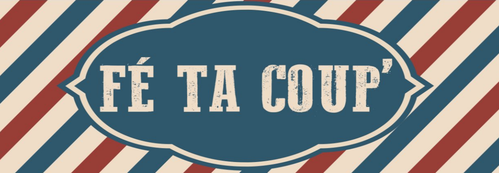

Mes Projets

Projet Gaston Cuisto
de janvier à juin 2022
Notre projet a pour finalité de concevoir et développer un site pour le restaurant d’application du lycée Gaston Berger de Lille en partenariat avec le Lycée Hôtelier de Lille.
Nous avons baptisé notre projet « Gaston Cuisto ».
- Jalon 1 : Présentation du choix technologique, collaboratif et les fonctionnalités.
- Jalon 2 : Structure du site.
- Jalon 3 : Politique RGPD.
- Jalon 4 : Base de données, développement du site et hébergement.
Projet PENC
de septembre à décembre 2021
Ce projet a été réalisé en équipe de 3 personnes. Mais nous étions 2 à travailler dessus.
Ce projet avait pour but de répondre à un cahier des charges de la société PENC, une petite entreprise régionale spécialisée dans les services à la personne.
Il c'est déroulé en 2 phase:
- Phase 1 : Pour comprendre le mode projet.
- Parties prenantes d'un projet
- Contraintes liées à tout projet
- Réalisation d'un cahiers des charges
- Phase 2 : Phase travaux pratiques.
- Diagramme de gant des missions
- Mission 1 : Etude pour la mise en place d'un réseau local et d'un extranet
- Mission 2 : Architure du site et realisation
- Mission 3 : Panorama de la mobilité

Projet Marieteam
de septembre 2022 à maintenant
MarieTeam est une compagnie de transport maritime. La compagnie assure la desserte maritime des îles du littooral français par délégation de service public.
Ce projet consiste à se mettre à la place d'une entreprise de service numérique (ESN). Notre ESN VDEV travaille pour MarieTeam afin de réaliser une application web pour la gestion des transports maritimes,
une application client lourd.
- Jalon 1 : Mise en place du projet et analyse des données
- Jalon 2 : Réalisation de l'application web
- Jalon 3 : Réalisation de l'application client lourd
Mes Stages de BTS

Fetacoup
147 rue de lannoy à Roubaix
10/01/2023 au 17/02/2023
Rapport de stage
Fetacoup
147 rue de Lannoy à Roubaix
09/05/2022 au 26/06/2022
Rapport de stage
Ma veille informationnelle
Projet Gaston Cuisto
de janvier à juin 2022
Notre projet a pour finalité de concevoir et développer un site pour le restaurant d’application du lycée Gaston Berger de Lille en partenariat avec le Lycée Hôtelier de Lille.
Nous avons baptisé notre projet « Gaston Cuisto ».
- Jalon 1 : Conception et design du site web en HTML, CSS, Bootstrap, JavaScript, PHP, SQL et Figma.

Projet E4
de janvier à juin 2022
Notre projet a pour finalité de concevoir et développer un site pour le restaurant d’application du lycée Gaston Berger de Lille en partenariat avec le Lycée Hôtelier de Lille.
Nous avons baptisé notre projet « Gaston Cuisto ».
- Jalon 1 : Conception et design du site web en HTML, CSS, Bootstrap, JavaScript, PHP, SQL et Figma.
Projet E4
de janvier à juin 2022
Notre projet a pour finalité de concevoir et développer un site pour le restaurant d’application du lycée Gaston Berger de Lille en partenariat avec le Lycée Hôtelier de Lille.
Nous avons baptisé notre projet « Gaston Cuisto ».
- Jalon 1 : Conception et design du site web en HTML, CSS, Bootstrap, JavaScript, PHP, SQL et Figma.